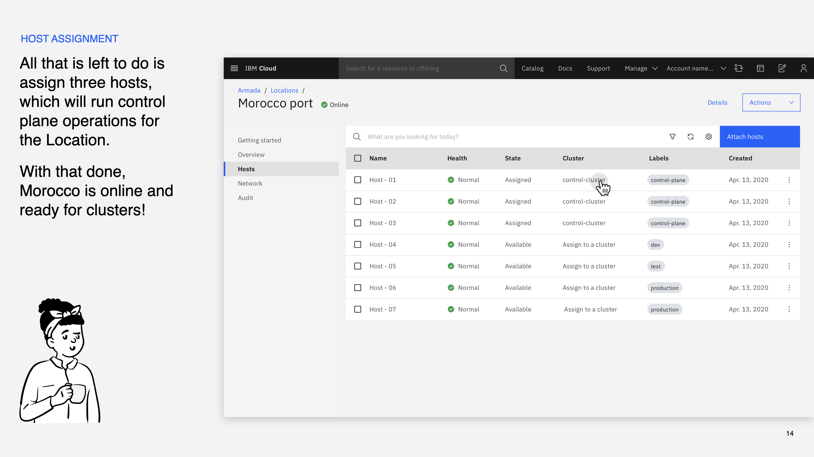
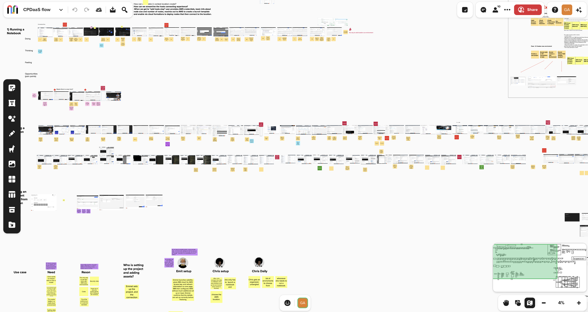
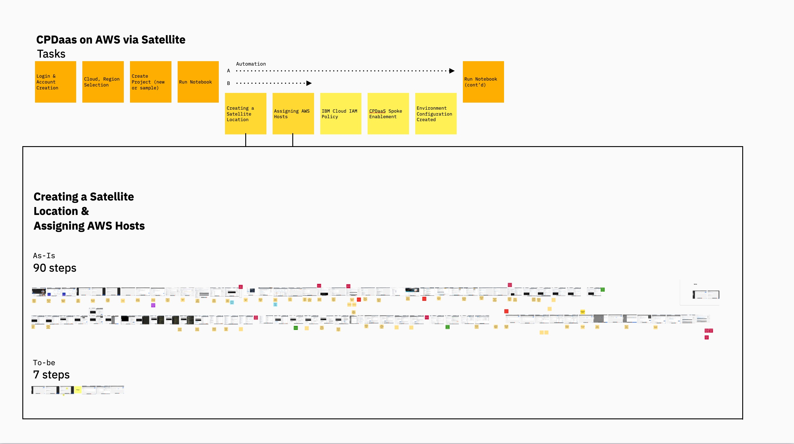
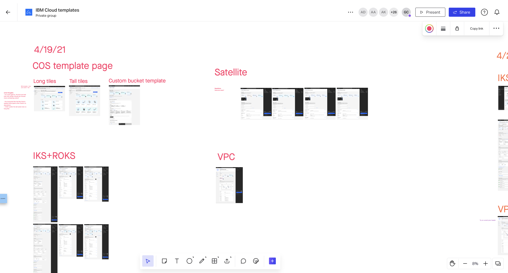
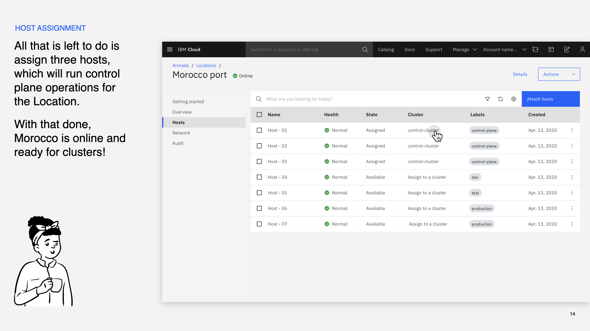
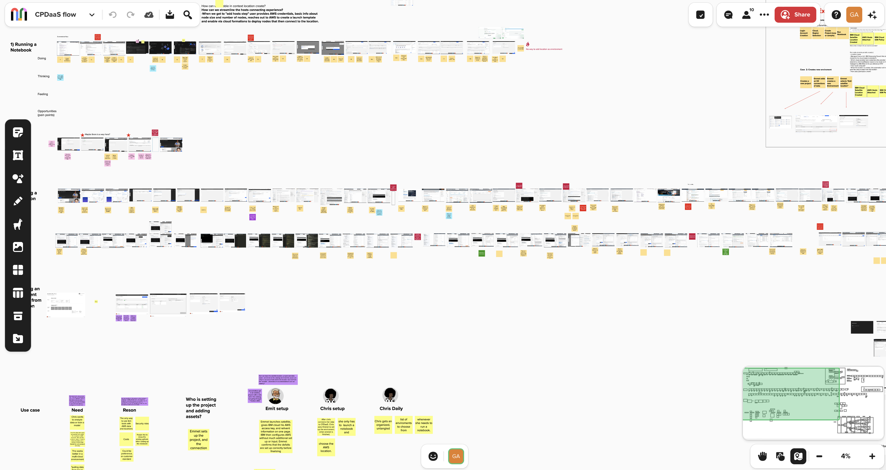
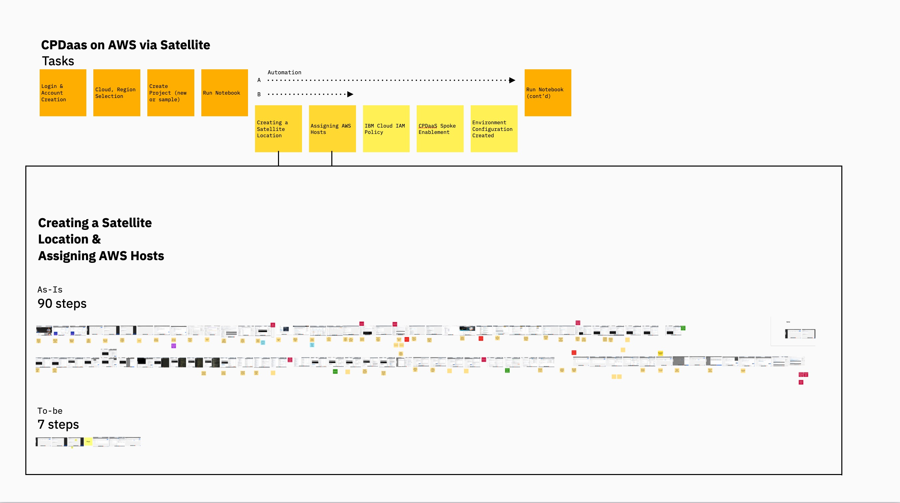
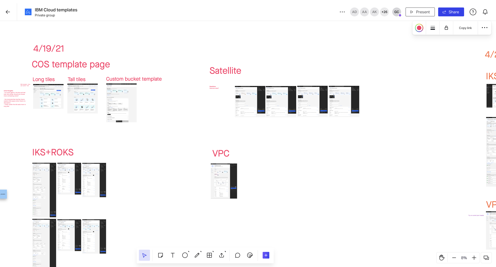

IBM Cloud Satellite
A new product based on an emerging cloud computing model called distributed cloud.
IBM Cloud Satellite
IBM Cloud Satellite extends IBM Cloud to any environment, letting businesses deploy and manage their workloads across on-premises, multi-cloud, and edge environments. I was the design lead on Satellite, which ended up being a hugely transformative experience for me. I had been working in cloud computing for 7+ years and was super excited at the idea of working on new compute models.
The idea of Satellite came about shortly after IBM’s acquisition of Red Hat (2018), which included Red Hat’s flagship offering, the OpenShift Container Platform. Our Kubernetes team, worked with the acquisition timeline to offer a managed version of OpenShift, short named ROKS, by the time the deal was finalized in 2019. While the launch of ROKS was extremely successful, we were still seeing IT teams struggling to manage OpenShift on-prem. This was largely due to the fact that they could’t use public clouds for certain workloads, either due to regulation, security or latency requirements. But still, as they say, “friends don’t let friends manage OpenShift.” What if we could manage OpenShift for them, not on the cloud, but on their own environment?
Our design team helped take the idea of Satellite from concept car to Tech Preview. We ramped up on the current state of distributed cloud offerings on the market, which were all in the early preview stage, and put a storyboard together to get early feedback from potential users. The storyboard was used as part of Satellite’s Tech Preview announcement at the IBM conference, Think 2020.
We quickly realized that offering managed OpenShift on-prem was only the beginning. There was a much broader need for managed cloud services in any environment. Our design team worked on clickable prototypes and user testing, which formed the foundation of Satellite’s Closed Beta.
During Satellite’s Beta, I conducted a UX audit of the experience of setting up Cloud Pak for Data on AWS via Satellite, revealing 96 steps and sometimes up to a month to get started. I collaborated with a group of designers from across IBM Cloud on a template pattern that would enable us to enable a one-click create for Satellite and other services across the IBM Cloud platform. Using the new template pattern led to a reduction in time to set up a Satellite location from one month to 15 minutes, 96 steps down to 7. This easy install was later cited as one of the main wow factors when Satellite won it’s Red Dot: Best of the Best award.
Satellite GA’d in early 2021 and is now a key enabler of IBM’s hybrid cloud strategy.
Images
 







Awards


2021
IBM
Outstanding Technical Achievement
Press
Teaching
-
2021
University of Texas at Austin —
UX 101 Guest Lecturer